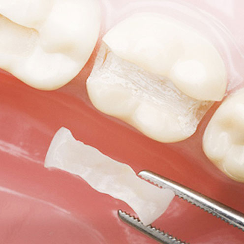
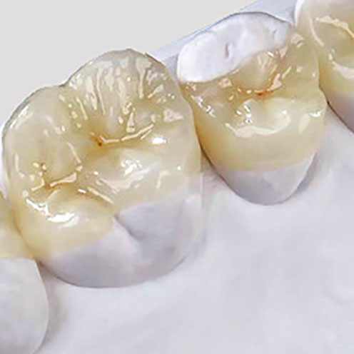

<!DOCTYPE html>
<html>
  <head>
    <!-- MADE WITH LOVE BY <> SERGEY KHMELEVSKOY </>-->
    <meta charset="UTF-8">
    <meta name="viewport" content="width=device-width, initial-scale=1.0, minimum-scale=1.0, maximum-scale=1.0, user-scalable=no">
    <title>Доктор Франк</title>
    <!--build:js js/main.min.js-->
    <script src="/js/lib/jquery-2.2.4.min.js"></script>
    <script src="/js/lib/modernizr.custom.js"></script>
    <script src="/js/lib/jquery.fullpage.min.js"></script>
    <script src="/js/lib/jquery.event.move.js"></script>
    <script src="/js/lib/jquery.twentytwenty.js"></script>
    <script src="/js/main.js"></script>
    <!--endbuild-->
    <!--build:css css/style.min.css-->
    <link rel="stylesheet" href="css/lib/bootstrap.css" type="text/css">
    <link rel="stylesheet" href="css/lib/hamburgers.css" type="text/css">
    <link rel="stylesheet" href="css/lib/jquery.fullpage.css" type="text/css">
    <link rel="stylesheet" href="css/lib/twentytwenty.css" type="text/css">
    <link rel="stylesheet" href="css/style.css" type="text/css">
    <!--endbuild-->
  </head>
</html>
<body>
  <div class="st-container" id="st-container">
    <div class="st-pusher">
      <nav class="st-menu st-effect-8" id="menu-8">
        <ul>
          <li><a href="#">Hаши клиники</a></li>
          <li><a href="#">Персонал</a></li>
          <li><a href="#">Услуги</a></li>
          <li><a href="#">Портфолио</a></li>
          <li><a href="#">Новости</a></li>
          <li><a href="#">Пациентам</a></li>
          <li><a href="#">Вопрос-ответ</a></li>
          <li><a href="#">Отзывы</a></li>
          <li><a href="#">Партнеры</a></li>
          <li><a href="#">Kонтакты</a></li>
        </ul>
      </nav>
      <div class="st-content" id="section-top">
        <div class="st-content-inner">
          <div id="st-trigger-effects">
            <button class="hamburger hamburger--spin" id="show-me-menu" type="button" data-effect="st-effect-8"><span class="hamburger-box"><span class="hamburger-inner"></span></span></button>
          </div>
          <!--TRANPARENT HEADER:: START-->
          <header class="header header--static header--transparent">
            <div class="container">
              <div class="row">
                <div class="col-sm-12">
                  <div class="header__wrapper">
                    <ul class="header__navi">
                      <li class="header__navi__btn"><a href="#">Записаться на прием</a></li>
                      <div class="header__navi__sections">
                        <li><a href="#">НАШИ КЛИНИКИ</a></li>
                        <li><a href="#">НАШИ КЛИНИКИ</a></li>
                        <li><a href="#">ПЕРСОНАЛ</a></li>
                        <li><a href="#">УСЛУГИ</a></li>
                        <li><a href="#">ПОРТФОЛИО</a></li>
                        <li><a href="#">КОНТАКТЫ</a></li>
                      </div>
                      <li class="header__navi__lang-switcher"><a href="#">RU</a></li>
                      <li class="header__navi__lang-switcher"><a href="#">EN</a></li>
                      <li class="fl-r"><a href="#"><i class="ico ico-social-fb"></i></a></li>
                      <li class="fl-r"><a href="#"><i class="ico ico-social-insta"></i></a></li>
                    </ul>
                  </div>
                </div>
              </div>
            </div>
          </header>
          <!--HERO::START-->
          <div class="hero hero--short hero--services">
            <div class="container">
              <div class="row">
                <div class="col-sm-12 text-sm-center">
                  <div class="hero__logo img-fluid hero__logo--white"></div>
                </div>
              </div>
            </div>
          </div>
          <!--SERVICES::START-->
          <section class="services-inner">
            <div class="container">
              <div class="row">
                <div class="col-sm-12">
                  <div class="heading">
                    <div class="heading__crumbs"><a class="heading__crumbs__home" href="#">Главная</a><span>/</span><a href="#">Услуги</a></div>
                    <div class="heading__navi"><a href="#">Имплантация</a><a class="active" href="#">Протезирование</a><a href="#">Терапия</a><a href="#">Эстетическая <br> стоматология</a><a href="#">Пародонтология</a><a href="#">Детская <br> стоматология</a><a href="#">Ортодония</a><a href="#">Диагностика</a></div>
                    <h1 class="heading__name">Протезирование</h1>
                  </div>
                </div>
              </div>
              <div class="row mt30 mb40">
                <div class="col-sm-3"></div>
                <div class="col-sm-9">
                  <div class="content">
                    <div class="content__heading content__heading--no-pad">Восстановление зуба вкладками</div>
                    <p>По сути это те же пломбы, но изготовленные в лаборатории по индивидуальным слепкам, как правило, из керамики. Обладают максимальной точностью прилегания и высокой эстетикой. В отличие от обычной пломбы, керамическая вкладка, более долговечна, полностью восстанавливает анатомию зуба и защищает его от глубоких трещин и переломов стенок, которые зачастую являются причиной последующего удаления. Восстановление вкладкой показано при разрушении коронки зуба более, чем на 40%.</p>
                    <p>Любой ортопедической конструкции будь то вкладка или коронка, предстоит функционировать в достаточно агрессивной, влажной среде полости рта под воздействием мощной функциональной нагрузки, поэтому одним из ключевых моментов для ее надежности является прецезионное качество прилежания к тканям зуба.</p>
                    <p>Именно осознание этих факторов диктует нашим врачам необходимость использования в ежедневной практике специальной оптики и освещения, позволяющих проводить высокоточную обработку тканей зуба при подготовке к протезированию.</p>
                    <p>Результатом столь тщательного подхода, является изготовление надежной конструкции и сохранность самого зуба, который она защищает.</p>
                    <button class="btn btn--huge btn--primary btn--rounded" href="#">ЗАПИСАТЬСЯ НА ПРИЕМ →</button>
                  </div>
                </div>
              </div>
            </div>
          </section>
          <!-- FOOTER::START-->
          <footer class="footer">
            <div class="container">
              <div class="row">
                <div class="col-sm-6">
                  <div class="footer__copy">© DoctorFrank</div>
                </div>
                <div class="col-sm-6">
                  <div class="footer__developer text-sm-right"><a href="#">Сверстано Mango Digital</a></div>
                </div>
              </div>
            </div>
          </footer><a class="scroll-up" href="#section-top"></a>
        </div>
      </div>
    </div>
  </div>
</body>